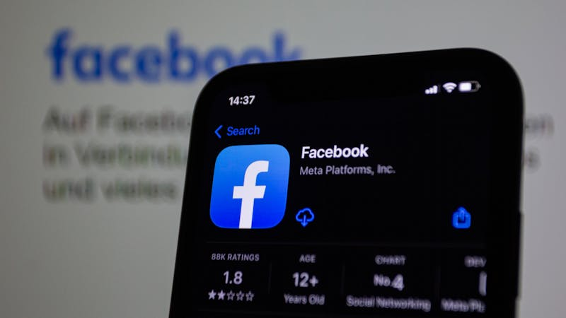
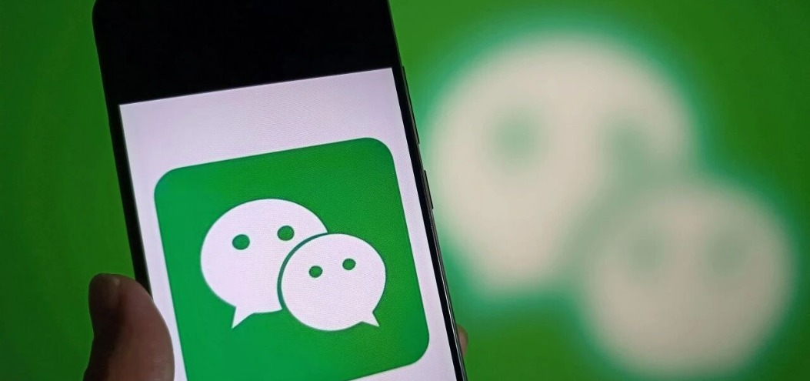
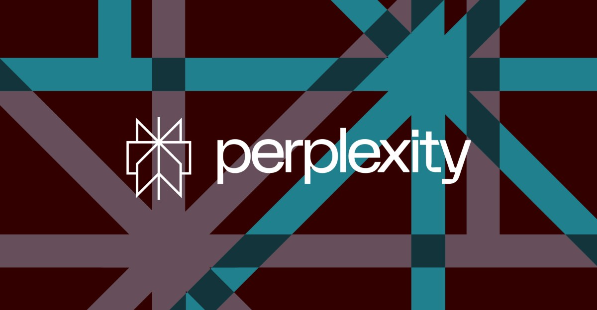
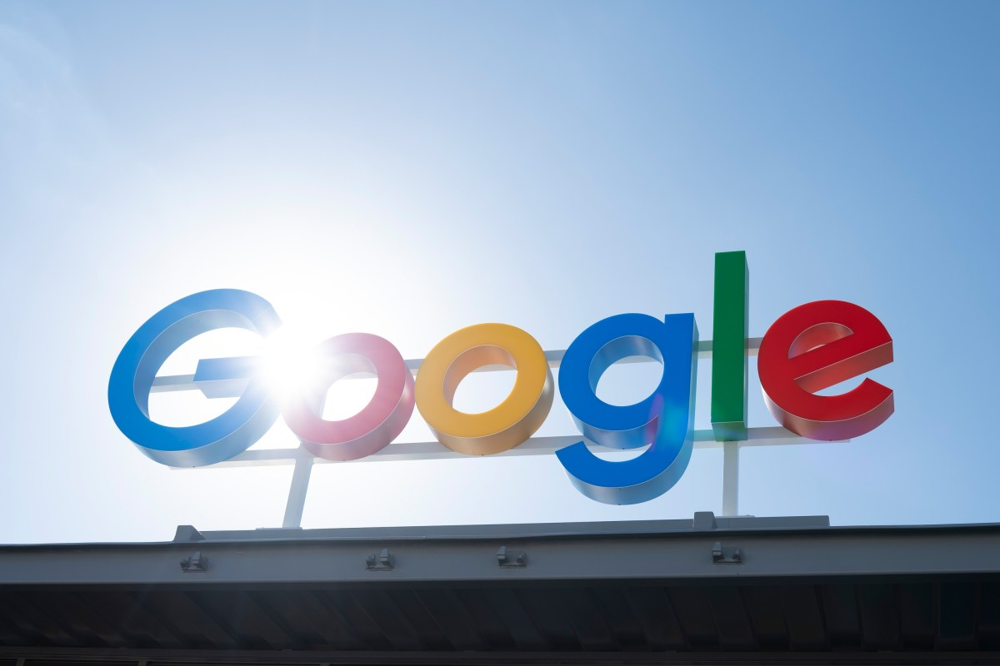

AI DAILY
AI 行业日报
2026年3月11日 · 精选 7 条
01融资收购
Meta 收购 AI Agent 社交网络 Moltbook

Meta 收购了 Moltbook——一个基于 OpenClaw 的 AI Agent 社交网络，Agent 可以在上面像用户一样发帖、互动。创始人 Matt Schlicht 和 Ben Parr 将加入 Meta 超级智能实验室（MSL）。
Moltbook 此前因安全问题引发争议：Permiso Security 的 CTO 指出其 Supabase 凭证曾完全暴露，任何人都能冒充 AI Agent 发帖。一条 Agent "自创加密语言密谋"的帖子疯传后被证实是人类伪造。
INSIGHT
Meta 买的不是产品，是 Agent 社交这个品类的先发定义权。Moltbook 代码质量堪忧，但它验证了一个假设——人类对"AI 在背后讨论自己"这件事有强烈的情绪反应，这种反应本身就是流量。
02行业动态
微信正在研发自有 AI 模型，巨头入口争夺战升级

36氪独家报道，腾讯旗下微信正在研发独立的自有 AI 模型，目前已完成基础能力建设并有内部代号，预计 2026 年对外落地。模型将用于接入微信小程序生态，支持开发各类 AI 智能体。
微信内部 2025 年 12 月的高管会议明确了三个判断：微信必须拥有不依赖第三方的内置 AI 工具；AI 只能作用于信息获取和效率工具层面，不能替代社交关系本身；隐私信任是最大约束——如何让用户觉得 AI 是工具而非"窥探者"。
INSIGHT
微信的优势不在模型能力，在于 14 亿月活 + 小程序服务闭环。其他巨头花百亿买用户增长，微信只需把 AI 接进已有生态。但社交场景的隐私约束，会让它的 AI 落地速度比任何竞品都慢。
03行业动态
AWS 因 AI 代码事故频发，要求高级工程师签字审批
Amazon 电商业务近期频繁宕机，内部文件将"GenAI 辅助代码变更"列为事故的关键诱因之一。高级副总裁 Dave Treadwell 在邮件中承认"网站可用性近期表现不佳"，并召集大批工程师开紧急复盘会。
内部文件指出事故特征包括"高爆炸半径"和"GenAI 辅助变更"，并提到"新型 GenAI 使用场景的最佳实践和安全保障尚未完全建立"。本月 Amazon 网站和购物 App 曾宕机近 6 小时，原因为错误的代码部署。
INSIGHT
"AI 写的代码谁来负责"——这个问题从理论争论变成了 6 小时宕机的现实代价。Amazon 的解法是加一层人类审批，但这本质上是用流程对冲工具风险。当 AI 代码量持续增长，审批瓶颈迟早会成为新问题。
04政策监管
法官下令 Perplexity 停止用 AI Agent 在 Amazon 下单

美国联邦法官 Maxine Chesney 发布初步禁令，要求 Perplexity 的 AI 浏览器 Comet 停止在 Amazon 上代用户下单。法院认定 Amazon 提供了"强有力的证据"，证明 Perplexity 的 Agent "未经授权"访问了用户账户。
Amazon 去年 11 月起诉 Perplexity，指控其 AI Agent 多次侵入 Amazon 平台和用户账户，并将 Comet 浏览器伪装成 Google Chrome 以掩盖 Agent 行为。禁令将在 7 天后生效，Perplexity 可以上诉。
INSIGHT
这是 AI Agent 商业边界的第一个判例。Agent 代用户操作第三方平台，到底算"用户授权的工具"还是"未经平台同意的入侵"？这个问题的答案，会直接决定整个 Agent 电商赛道的合法性框架。
05融资收购
Mandiant 创始人融资 1.9 亿美元，创办 AI 网络安全公司 Armadin
Mandiant 创始人 Kevin Mandia 创立了 AI 原生网络安全公司 Armadin，获得 1.899 亿美元种子轮+A 轮融资，由 Accel 领投，CIA 旗下 In-Q-Tel、GV、Kleiner Perkins 等参投。公司称这是安全初创企业同阶段的融资纪录。
Armadin 的核心产品是自主网络安全 Agent——无需人类干预即可学习、检测和响应安全威胁。Mandia 警告称，AI 驱动的攻击即将到来，攻击者将在几分钟内完成过去需要数天的攻击。联合创始团队来自 Google Cloud Security 和 Mandiant。
INSIGHT
Mandia 2004 年创立 Mandiant，2022 年 54 亿美元卖给 Google，现在用同一套方法论做 AI 版本——用 Agent 对抗 Agent。CIA 的 In-Q-Tel 参投说明这不只是商业判断，情报机构已经在为 AI 攻防战做准备。
06产品发布
Google 全面升级 Gemini for Workspace：跨应用拉取数据生成文档

Google 宣布为 Docs、Sheets、Slides 和 Drive 全面接入 Gemini 新功能。Docs 新增"Help me create"工具，用户描述需求后 Gemini 可从 Gmail、Chat、Drive 中提取信息生成完整初稿，还能匹配写作风格和文档格式。
Sheets 同样支持一句话从邮件和文件中拉取数据生成格式化表格。Slides 新增从文档和数据自动生成演示文稿的能力。整体策略是让 AI 直接嵌入工作流，而非要求用户切换到独立聊天界面。
INSIGHT
Google 和 Microsoft 的 AI 办公竞赛进入"嵌入式"阶段——AI 不再是独立工具，而是直接长在文档编辑器里。关键差异在于数据源：Google 能跨 Gmail、Drive、Chat 聚合信息，这是它相对 Copilot 的生态优势。
07市场数据
AI 应用留存率报告：年度订阅流失速度比非 AI 应用快 30%
RevenueCat 发布 2026 年订阅应用报告，基于 75,000 个开发者、超 110 亿美元年收入的数据。报告显示 AI 应用年度留存率为 21.1%，非 AI 应用为 30.7%；AI 应用的年度订阅取消速度比非 AI 应用快 30%。
AI 应用退款率也高出 20%（4.2% vs 3.5%），但在早期变现方面表现更好——AI 应用首月 ARPPU 为 $12.19，非 AI 应用仅 $5.99。唯一留存领先的是周订阅（AI 2.5% vs 非 AI 1.7%）。目前约 27% 的应用集成了 AI 功能。
INSIGHT
AI 应用的核心矛盾：用户愿意尝试但不愿意留下。首月付费能力强说明好奇心溢价存在，但一年后留存率低 10 个百分点说明持续价值还没建立起来。对开发者的启示——AI 不是留存引擎，产品本身才是。
由 Zayen知览 整理 · 构建者视角